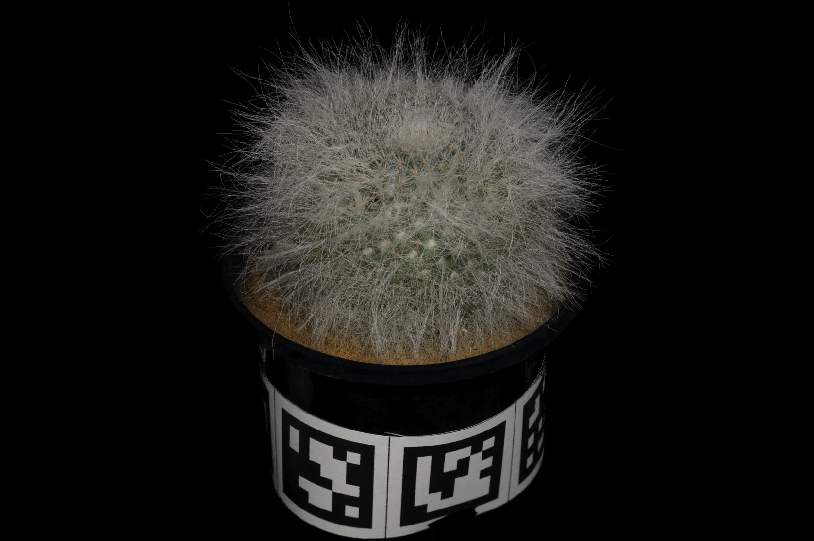
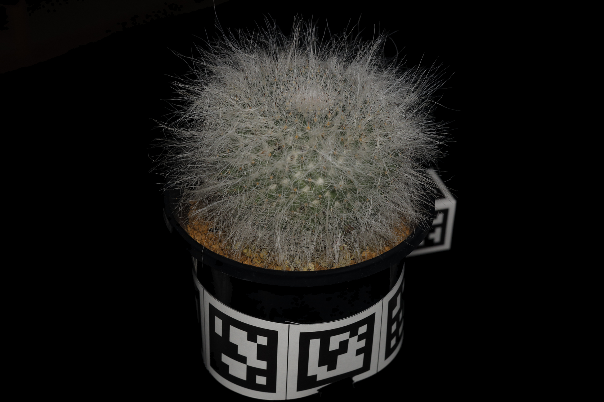
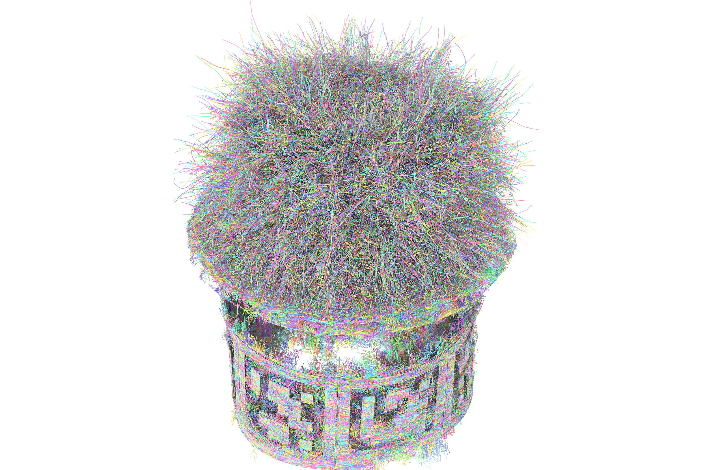

Kenji Tojo1 Ariel Shamir2 Nobuyuki Umetani3 Bernd Bickel1
1ETH Zürich 2Reichman University 3The University of Tokyo
ACM Transactions on Graphics (Proceedings of SIGGRAPH Asia 2026)
Paper / arXiv (reduced) / Code / Rasterizer / Dataset / Images / Videos
Faithfully capturing diverse real-world objects with fuzzy, anisotropic structures—such as hair, fur, fibers, and textiles—for efficient real-time visualization remains challenging. Recent radiance field reconstruction methods capture these structures from multi-view images using translucent volumetric primitives such as 3D Gaussians rather than opaque low-dimensional primitives (e.g., triangles, line segments, and polylines), thereby limiting compatibility with standard depth-tested rasterization, reflection modeling, and physical simulation. We present an inverse rendering method for reconstructing fuzzy geometry using explicit line segments, which are rasterized on a subpixel grid for anti-aliasing to reproduce a semi-transparent appearance. While straightforward to render, optimizing numerous line primitives to match target images poses a significant challenge. We address this by introducing a stochastic differentiable rasterizer for line segments that produces informative gradients with respect to vertex positions, attributes, and discrete connectivity.
Explore the reference photographs, our reconstructions, and the recovered geometry.



Reference Reconstruction GeometryWe build on stochastic opacity masking, introduced in our previous work DiffSoup, which enables gradient-based inverse rendering with opaque triangle primitives. We extend this formulation to line primitives, using 1-pixel-width Bresenham line rasterization with screen-space filtering for representing a fuzzy semi-transparent appearance. We address the key challenge of extending stochastic opacity masking to multi-sample anti-aliasing (MSAA), where each pixel involves multiple fragment colors rather than a single one.
![Top: stochastic opacity masking from DiffSoup, where uniform random thresholds select a single visible fragment along each camera ray, together with the resulting score-function gradient estimator. Bottom left: our forward pass, which rasterizes line segments with Bresenham's algorithm on a 2x subpixel grid and applies image-space filtering to obtain the pixel color. Bottom right: our opacity gradient under MSAA, where the intractable joint probability over all fragments in the filter support is factorized under an independence assumption and evaluated at the pixel with the largest filter weight.](images/sa26_lines_overview.png)
@article{tojo2026lines,
author = {Tojo, Kenji and Shamir, Ariel and Umetani, Nobuyuki and Bickel, Bernd},
title = {Inverse Rendering for Modeling with Line Primitives},
year = {2026},
issue_date = {December 2026},
publisher = {Association for Computing Machinery},
volume = {45},
number = {6},
url = {https://doi.org/10.1145/3842527},
doi = {10.1145/3842527},
journal = {ACM Trans. Graph.},
month = dec,
articleno = {200},
numpages = {13}
}We thank the anonymous reviewers for their valuable feedback. This work was partly conducted while the first author was at the University of Tokyo, where he was supported by JSPS KAKENHI Grant Number 23KJ0699.